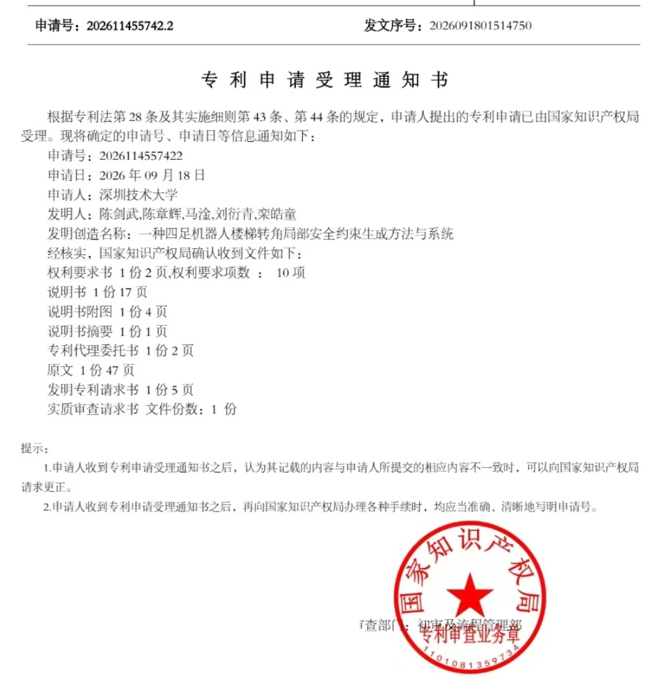
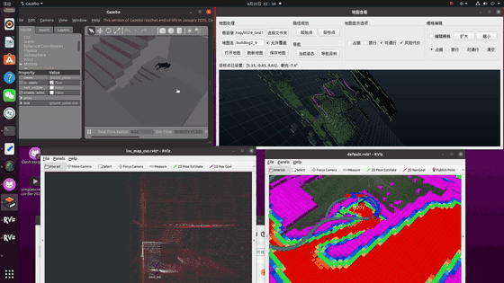
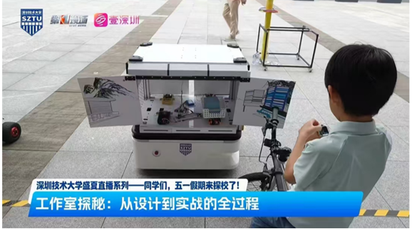
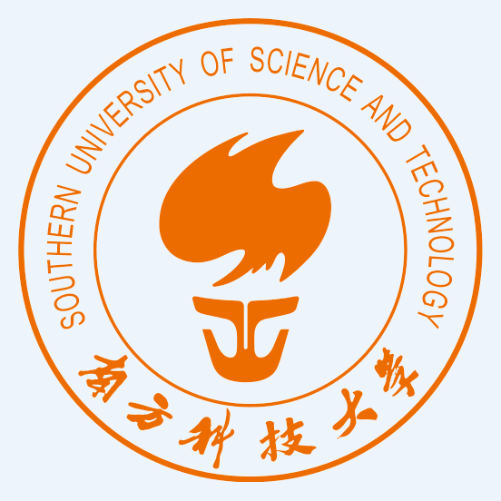
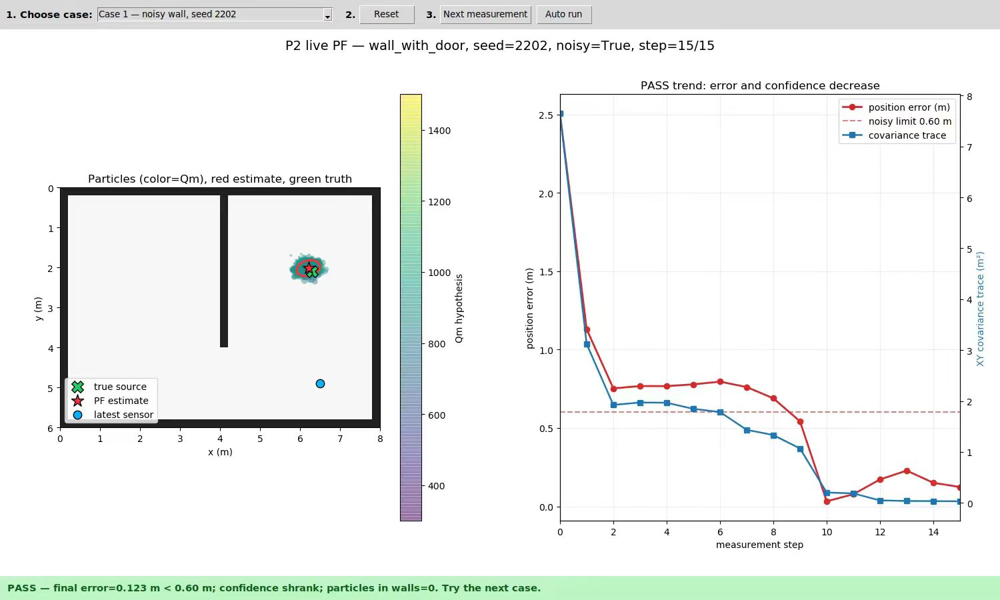
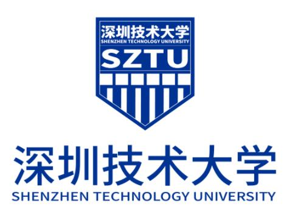

DPS Hand: A Dual-Parallelogram and Slot-Guided Gripper for Adaptive Grasping and Environmental Scooping
IEEE International Conference on Automation Science and Engineering (IEEE CASE), 2026. To appear.

Hi!
Undergraduate researcher in robotics
I am Zhanghui Chen (陈章辉), an undergraduate student in Robotics Engineering at Shenzhen Technology University.
My work focuses on robot autonomy and robotic systems: autonomous exploration, SLAM, path planning, multi-sensor perception, motion control, and Sim-to-Real deployment.
My current work includes quadruped robot 3D autonomous exploration in unknown environments, robot olfactory navigation, acoustic navigation, underwater ROV control, and autonomous logistics vehicles.
Contact / Publications / Projects / Experience
> focus: ROS development / autonomous navigation / motion control / robot systems
DPS Hand: A Dual-Parallelogram and Slot-Guided Gripper for Adaptive Grasping and Environmental Scooping
IEEE International Conference on Automation Science and Engineering (IEEE CASE), 2026. To appear.
Failure-Aware Frontier Exploration with Temporal Risk Memory under Sparse Local Point-Cloud Observations
The 4th International Conference on Robotics, Control and Vision Engineering (RCVE), 2026. To appear.
A risk-aware frontier planner with sparse 3D observations for autonomous inspection in new-energy facilities
International Conference on Optoelectronic Information and New Energy Technology (OINET 2026). To appear.
† Equal contribution.
Shadow-Aware Frontier Exploration with Simulated Sparse Range Observations for Mobile Robots
The 2nd Asia Conference on Unmanned Systems and Intelligent Control (USIC 2026). To appear.
Lightweight Metal-Surface Defect Detection with Leakage-Aware High-Resolution Localization
2026 2nd International Conference on Laser, Optical Technology and Applications (LOTA 2026). To appear.
Method and System for Generating Local Safety Constraints at Staircase Corners for Quadruped Robots
Invention patent application accepted for processing by CNIPA (Application No. 202611455742.2; filed September 18, 2026).

Quadruped Robot Autonomous Exploration and Hazard-Source Search
Leading this Challenge Cup "揭榜挂帅" track project since April 2026. Developing a quadruped robot system for autonomous exploration in 3D unknown environments, integrating FAST-LIO mapping, OctoMap-based traversability and risk-cost mapping, A* global path planning, and EGO-Planner local trajectory optimization. My contributions include optimizing FAST-LIO to address pose drift in geometrically degenerate scenes and localization-data backlog issues, improving localization stability and real-time performance. The project also covers hazard-source search, recognition and localization, followed by autonomous return after task completion.

Multi-DOF Underwater Robot ROV
Built a ROS-based framework for motion control and Sim-to-Real integration. Optimized PID control and achieved stable depth and heading control on a physical ROV. Implemented EKF-based multi-sensor fusion modules with unit and integration tests.
Autonomous Logistics Vehicle
Designed a local planner, improved DWA-based autonomous obstacle avoidance, and integrated OCR recognition into a ROS perception- planning loop for last-mile delivery. Led technical decomposition, system integration, and functional testing before acceptance.


Research Assistant / Visiting Scholar
Conducted research on robot olfactory navigation and acoustic navigation under the supervision of Prof. Kong He.

Technical Product Intern
Evaluated and deployed machine-learning modules, including TensorFlow-based visual classification and real-time inference for inspection and obstacle-avoidance scenarios. Integrated path-planning and obstacle-avoidance algorithms, processed LiDAR data and AMCL localization in ROS, and prepared technical documentation for algorithm iteration and product delivery.

B.Eng. in Robotics Engineering
Sino-German College of Intelligent Manufacturing
Coursework: Robotics, robot modeling and simulation, automatic control, electrical engineering, digital circuits, analog circuits, advanced mathematics, and college English.
I am open to robotics research assistant and internship opportunities related to ROS development, navigation algorithms, motion control, perception, and decision-making for robotic systems.
Email: xhhuniverse@gmail.com
![[certificate]](./assets/raicom-2025-first-prize.jpg){kind=link}